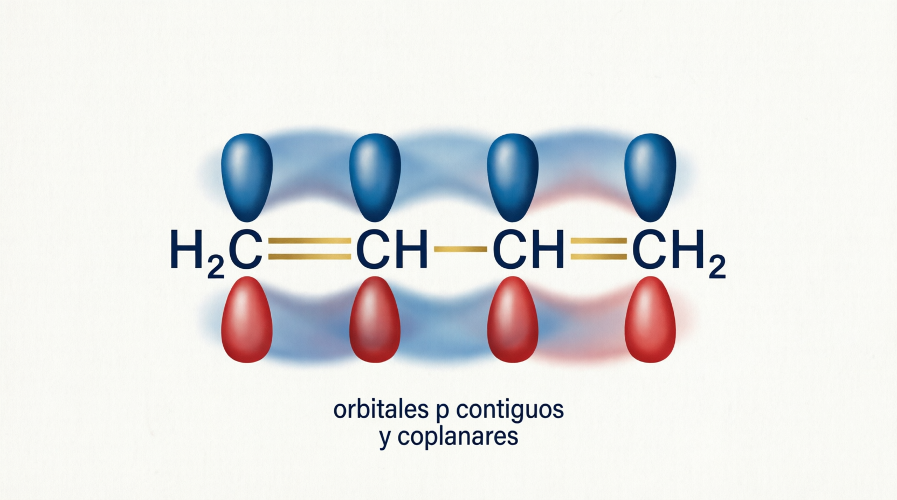
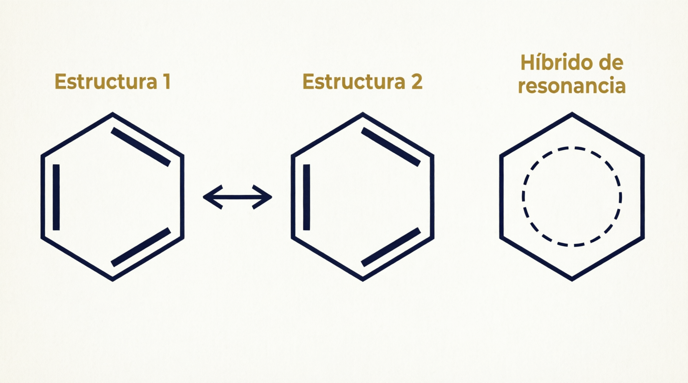
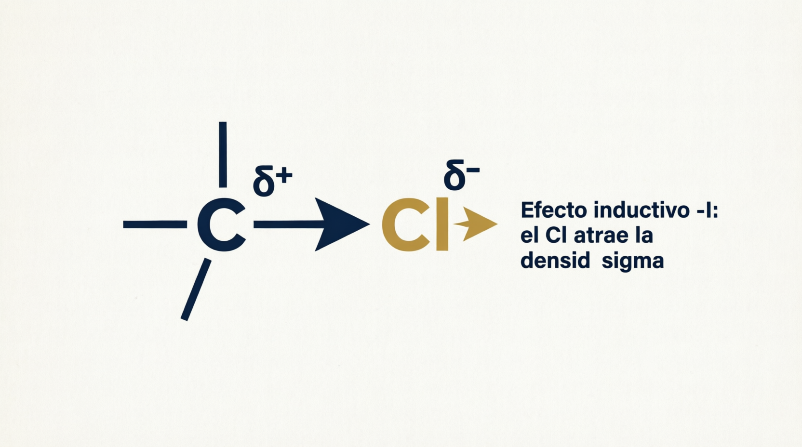
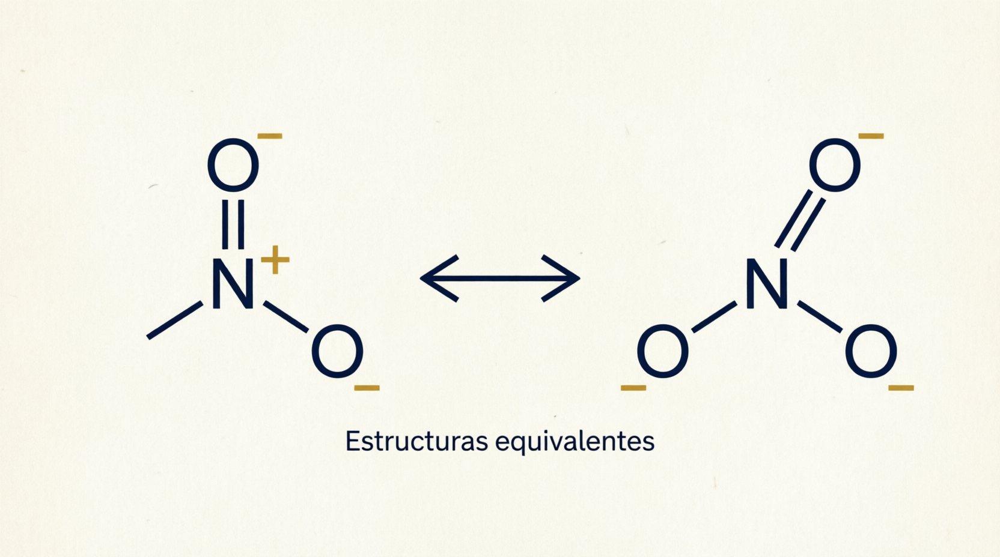
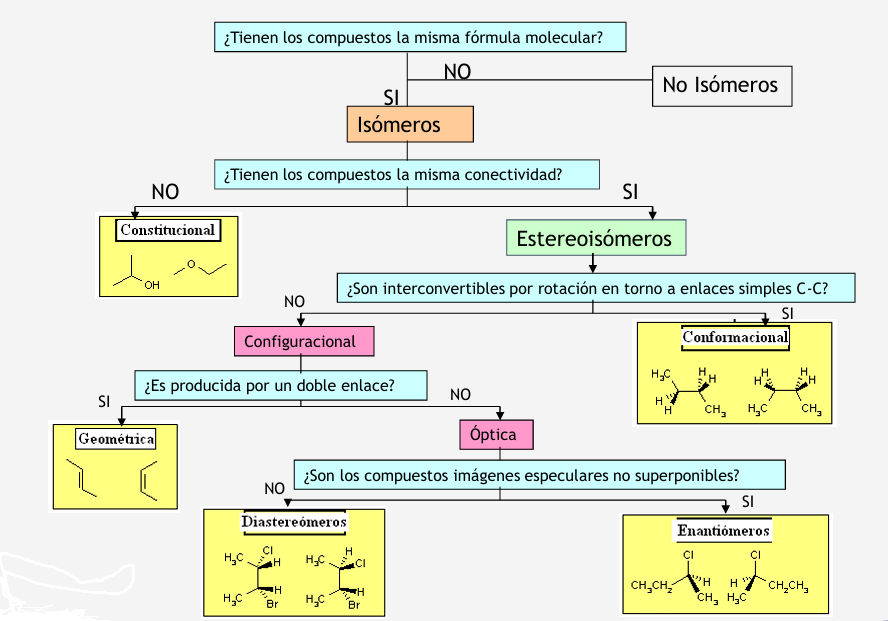
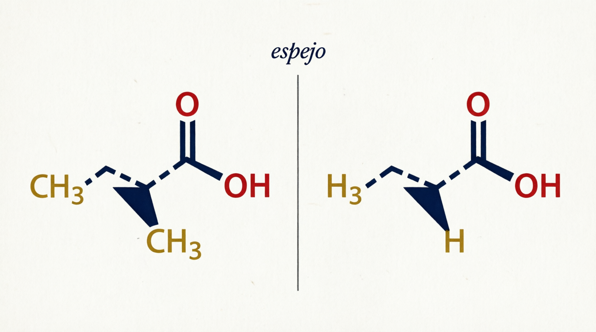
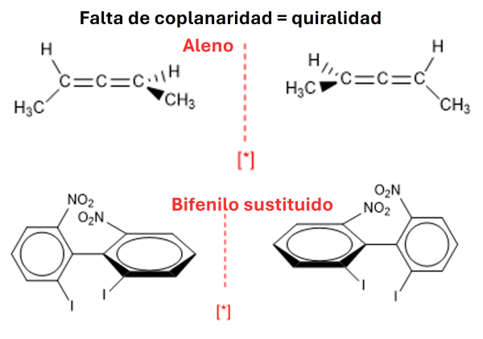
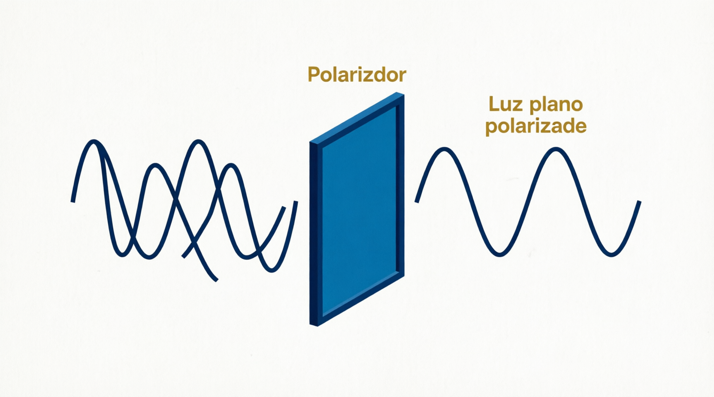
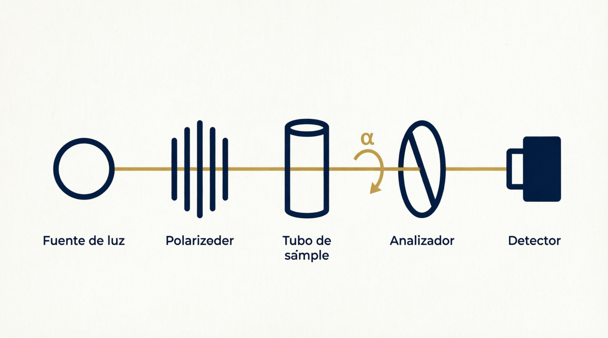

Universidad Peruana Cayetano Heredia
Facultad de Medicina • Química Orgánica
Capítulo 2: Efectos Electrónicos, Resonancia y Estereoquímica
Facultad de Medicina • Química Orgánica
Capítulo 2: Efectos Electrónicos, Resonancia y Estereoquímica

1,3‑butadieno: los 4 orbitales p contiguos y coplanares forman un sistema π deslocalizado.
Cada vértice es un C unido a 3 átomos (2 C + 1 H) → hibridación sp² con 1 orbital “p” sin hibridar. Los orbitales p coplanares se solapan creando dos nubes π deslocalizadas: una sobre y otra debajo del plano de los átomos.

Las dos estructuras de Kekulé y el híbrido de resonancia (círculo punteado).
| Consecuencia | Explicación | Ejemplo |
|---|---|---|
| Mayor estabilidad | Disminuye reactividad y/o desplaza equilibrios | Benceno menos reactivo que un alqueno |
| Orden de enlace intermedio | Fortaleza y longitud de enlace con valores intermedios | C–C del benceno: 139 pm (entre 154 y 134 pm) |
| Molécula | ¿Enlace π deslocalizado? | ¿Por qué? |
|---|---|---|
| Propeno (CH₂=CH–CH₃) | No | Solo 2 orbitales p (un doble enlace aislado); el CH₃ es sp³ |
| 1,3‑butadieno | Sí | 4 orbitales p contiguos y coplanares |
| Benceno | Sí | 6 orbitales p coplanares en anillo plano |
| Ciclooctatetraeno | No | No es planar → no hay coplanaridad de orbitales p |
Desplazamiento de la densidad electrónica debido a: diferencia de electronegatividad, deslocalización y polaridad del medio.

En CH₃–Cl el cloro atrae la densidad σ: C queda δ+ y Cl δ− (efecto –I, estático Ie).
| Hibridación | % orbital s | Atracción por los electrones |
|---|---|---|
| sp³ | 25% | Menor |
| sp² | 33% | Intermedia |
| sp | 50% | Mayor (el orbital s es más interno) |

Ambos oxígenos distan 1.2 Å del N: la molécula es un híbrido de dos especies idénticas; el enlace N–O es intermedio en ambos extremos.
El heteroátomo con par libre conjugado con el doble enlace dona densidad π (+M):
CH₂=CH–Cl ↔ −CH₂–CH=Cl+ | CH₂=CH–OH ↔ −CH₂–CH=OH+ | CH₂=CH–NH₂ ↔ −CH₂–CH=NH₂+
La estructura con cargas aporta menos (octetos/cargas), pero explica la deslocalización y la mayor estabilidad del sistema. En el grupo nitro (–NO₂) las dos estructuras son equivalentes → contribuyen por igual y ejercen fuerte efecto sobre el híbrido.
b > c > a. En (b) el catión es alílico: la carga + se deslocaliza por resonancia con el doble enlace contiguo → muy estabilizado. En (c) el catión primario no se deslocaliza (el doble enlace está lejos). En (a) el catión vinílico (sobre el carbono sp² del doble enlace) es el más inestable.

Flujograma de clasificación: fórmula → conectividad → rotación → doble enlace → espejo.
| Tipo | Fórmula | Ejemplos |
|---|---|---|
| Cadena | C₄H₁₀ / C₅H₁₂ | n‑butano ↔ isobutano; n‑pentano ↔ neopentano |
| Posición | C₄H₁₀O / C₅H₁₀O | 1‑butanol ↔ 2‑butanol; 2‑pentanona ↔ 3‑pentanona |
| Función | C₂H₆O / C₃H₆O | etanol ↔ éter dimetílico; propanona ↔ propanal |

Enantiómeros del ácido láctico: imágenes especulares no superponibles.

Alenos (C central sp, planos perpendiculares) y bifenilos sustituidos (impedimento estérico → no coplanares).

El polarizador solo deja pasar la luz que vibra en un plano.

Polarímetro: la sustancia ópticamente activa rota el plano α; girando el analizador se mide el ángulo.
| Sustancia | Rotación específica | Notación |
|---|---|---|
| Carvona de comino | [α]D = +62.5° | (+)‑carvona / d‑carvona (dextrógira) |
| Carvona de menta | [α]D = −62.5° | (−)‑carvona / l‑carvona (levógira) |
| Ác. láctico de músculo | [α]D = +2.5° | (+)‑ácido láctico / d |
| Ác. láctico de leche | [α]D = −2.5° | (−)‑ácido láctico / l |
Haz clic en cada nodo para desplegar u ocultar sus ramas.
Haz clic en la tarjeta para voltearla y ver la respuesta. Luego califícate con honestidad.
a) Son enantiómeros (estereoisómeros configuracionales ópticos: imágenes especulares no superponibles, mismo C* con 4 grupos diferentes).
b) Los receptores y enzimas son ellos mismos quirales (proteínas de L‑aminoácidos): la unión es estereoespecífica, como una mano en un guante. Por eso cada enantiómero tiene un efecto biológico distinto. Lección regulatoria: hoy se exige control de quiralidad de los fármacos.
Las bacterias intestinales fermentan carbohidratos produciendo D‑lactato. Nuestra L‑lactato deshidrogenasa es estereoespecífica: solo reconoce el enantiómero L (el del músculo, [α]D = +2.5°), por lo que el D‑lactato se acumula y produce acidosis. Es un ejemplo clínico directo de que los enantiómeros tienen propiedades biológicas distintas (aunque físicas idénticas salvo el signo de rotación).
a) Enantiómeros (isómeros ópticos). b) Administrar solo el (R)‑enantiómero (levosalbutamol) mantiene la eficacia β2‑agonista con menor carga de efectos adversos: la quiralidad optimiza la relación beneficio/riesgo.
El anillo aromático (sp², π deslocalizado) y el grupo –COOH (resonancia que estabiliza el carboxilato, efecto M) posicionan el fármaco en la COX; pero el C* determina la orientación correcta de los grupos: solo la configuración (S) complementa el sitio activo. La inversión R→S enzimática explica por qué la mezcla racémica sigue siendo útil.
La contribuyente con C=N⁺ y O⁻ otorga al enlace C–N carácter parcial de doble enlace → es plano y rígido (sin rotación libre). Esa planicidad restringe los ángulos φ/ψ de la cadena y determina las estructuras secundarias (α‑hélice, β‑lámina). Resonancia → estructura → función.
Los anillos aromáticos planos poseen nubes π deslocalizadas que se apilan (interacciones π–π) entre pares de bases contiguos. La deslocalización aumenta la estabilidad de la hélice, tal como la clase indica: “la deslocalización aumenta la estabilidad de las especies químicas”.
En resonancia solo se mueven los electrones π y pares libres; los núcleos jamás. Si moviste átomos, no es resonancia: es otro compuesto.
Los electrones π son más móviles que los σ → el efecto mesomérico + electromérico siempre supera al inductivo estático + dinámico.
Efecto donador de alquilos: 3° > 2° > 1° > CH₃. Y para atraer electrones por hibridación: sp (50% s) > sp² (33%) > sp³ (25%) → “el s atrae más”.
Con plano de simetría (silla) → aquiral, ópticamente inactiva. Sin ningún elemento de simetría (mano) → quiral, activa.
Carbono sp³ con 4 grupos distintos → carbono asimétrico → enantiómeros. Un solo C*: siempre ópticamente activo.
Dextrógira (+): gira la luz como las agujas del reloj. Levógira (−): al revés. Carvona: comino +62.5°, menta −62.5°.
El ciclooctatetraeno se tuerce para no violentar ángulos → no planar → sin deslocalización. Benceno plano → sí deslocaliza.
Enantiómeros = imágenes especulares no superponibles. Diastereoisómeros = estereoisómeros que NO son imágenes especulares.
Haz clic en cada término para ver su definición:
Error: “La molécula oscila entre una estructura y otra”.
Error: cambiar la posición de los núcleos entre estructuras.
Error: asumir que todo anillo con dobles enlaces alternados deslocaliza.
Error: usar I para sistemas π o M para enlaces σ.
Error: creer que los confórmeros del butano son isómeros separables.
Error: generalizar a moléculas con varios C*.
Error: pensar que el signo de rotación indica la configuración absoluta.
Error: negar deslocalización en CH₂=CH–Cl o CH₂=CH–OH.
Cada ciclo muestra 10 preguntas al azar de una base de 30. Al terminar, podrás recargar un nuevo ciclo con preguntas aleatorias.